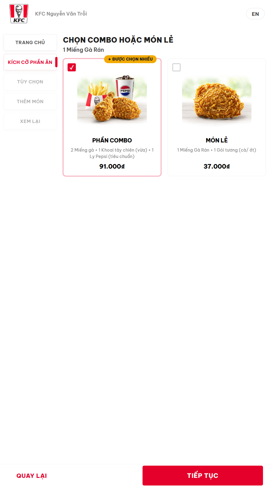
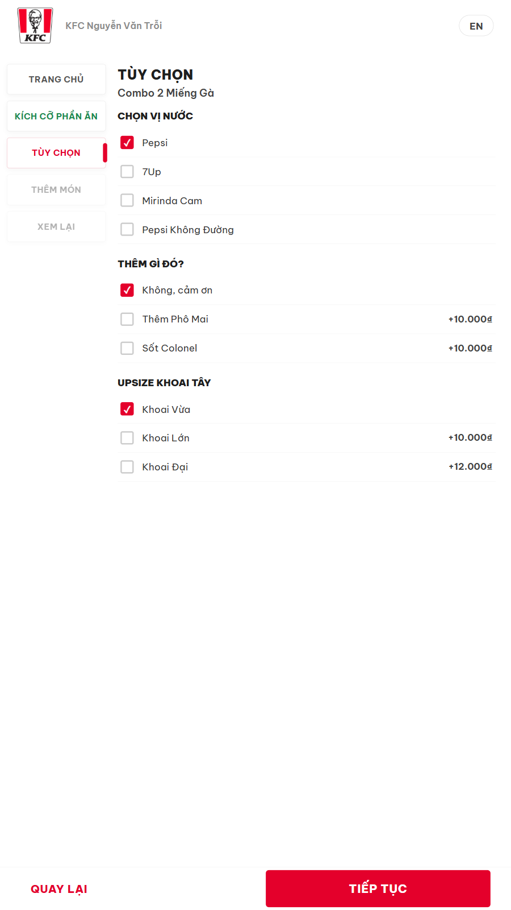
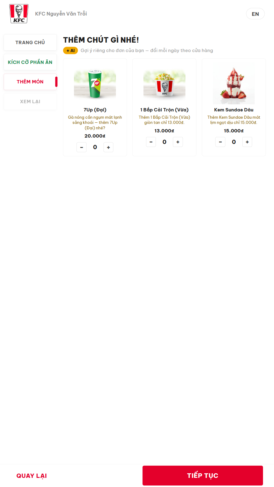
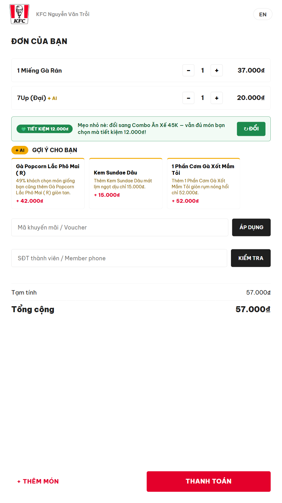

A kiosk with a
salesperson’s brain
Agentic AI Build Week 2026 · F&B Track · KFC Vietnam · Problems P2 + P4
🔴 LIVE: kfc-kiosk-agent.gentle-sky-3b0e.workers.dev
The problem — from KFC’s own brief
250+ stores. One static menu.
- “You may also like” is hand-picked by marketing, once a month, the same for every store.
- Office tower at noon and mall on Saturday night get identical suggestions.
- KFC’s estimate: 15–20% of order value left on the table.
- P2 target: +10–15% AOV from contextual recommendations · P4: conversational ordering + human handoff.
Our added constraint: the upsell must feel like a good salesperson, not a slot machine.
Customer time at a kiosk is intense — trust is the only durable growth lever.
What we built
Two agents, one deterministic brain — fully observable
- Customer Hypothesis Agent — one camera glance + every tap → a living, confidence-scored guess. Invisible to the customer.
- Recommendation Engine — 8-signal deterministic scorer (~70ms) over the real crawled menu; LLM writes only the voice.
- Ordering Agent (P4) — 9 grounded tools: vouchers, loyalty, cart, order, human handoff.
- Glass box — every API call, D1 query, LLM call and strategy decision streams to a live diagram + cost meter.
The invisible profiler
Guesses, never assumes
- Vision glance: coarse bands only — age band, attire, group. Never identity, nothing stored.
- Every tap refines it: order type, a family bucket, a dismissed suggestion, the live cart.
- Output = an action policy: “what to suggest next” — a full cart drives combo-bias to zero.
- The kiosk shows nothing. The journey customers know stays untouched.
“A mother and her child out for a quick meal”
→ “a dessert to complete the meal”
The engine — deterministic core, generative skin
Context × 8 signals, explainable per pick
score = .25·co-occurrence (9,000 POS baskets, per store-cluster × daypart)
+ .15·persona (live hypothesis × confidence) + .12·affinity
+ .13·daypart/holiday + .13·promo + .10·inventory posture
+ .07·margin + .05·popularity
- Hard guards first: in stock at this store, never a category the combo covers, never a bundle on a bundle.
- LLM (gpt-oss-120b) writes the pitch line only — raced vs 1.2s timeout into deterministic copy. Survives total LLM outage.
- Every slot carries a strategy label — the “why” is on screen.
🥤 Bù chéo lợi nhuận👁 Khớp chân dung🧺 Hay mua cùng📦 Đẩy tồn kho🏷️ Khuyến mãi🕐 Hợp khung giờ
Admin can toggle any signal live — the slate visibly changes.
Buyer psychology — implemented, not claimed
Four plays from the QSR playbook

Loss aversion — for the customer.
Honest “TIẾT KIỆM” flags, computed live.

Decoy tier.
Vừa +0 · Lớn +10k · Đại +12k — asymmetric dominance.

Cross-subsidy.
Chicken, no drink → drink leads (90%+ margin). Sensory copy, honest attach rates.

Kindness first.
Separates → cheaper combo swap offered before any upsell. Full meal → it stops selling.
250 stores are not one store
Per-store intelligence, one-tap scenarios
- Stores → site clusters (mall / office / residential / tourist); each cluster’s baskets mined separately.
- Live inventory: push overstock, protect near-stockout, never suggest sold-out. Orders decrement stock.
- Holiday calendar + seasonal skin: Christmas combos, Noel promo, festive dress — staged in one tap.
- Demand + stockout forecast per store from 90 days of POS history.
The economics — measured, not promised
≈13₫
infra cost per customer session
Cloudflare list prices, itemized live on screen
+28.000₫
AOV lift per order (+15%)
35% suggestion acceptance — logged, honest counterfactual
≈ 2,200× return per customer — and the free tier covers a small store’s whole day.
Production readiness
Deploys in seconds, degrades gracefully
- One Cloudflare Worker + D1 + Workers AI + static assets. No build step, no fleet to manage.
- 70 automated end-to-end assertions — green on production right now.
- LLM down? Deterministic pitches; the scorer is pure math. UX survives total outage.
- New store = assign a cluster on day one; its own data refines it. POS integration = a nightly export.
- Privacy by construction: coarse bands, no identity, hypothesis dies with the session.
Kiosk UI ─► Worker API ─► Rec Engine ─► D1
│ └─► Agent Loop ─► 9 tools ─► HITL staff
└─ profiler (vision + 8B) ──► Workers AI
ALL of it ─► telemetry ─► live diagram + cost meter
Trust first. Upsell follows.
Pennies never mattered less.
kfc-kiosk-agent.gentle-sky-3b0e.workers.dev · /kiosk · /admin
TinyFish · OpenAI gpt-oss-120b on Cloudflare Workers AI · Cloudflare Workers / D1 · Gemini imagery · Langfuse-ready